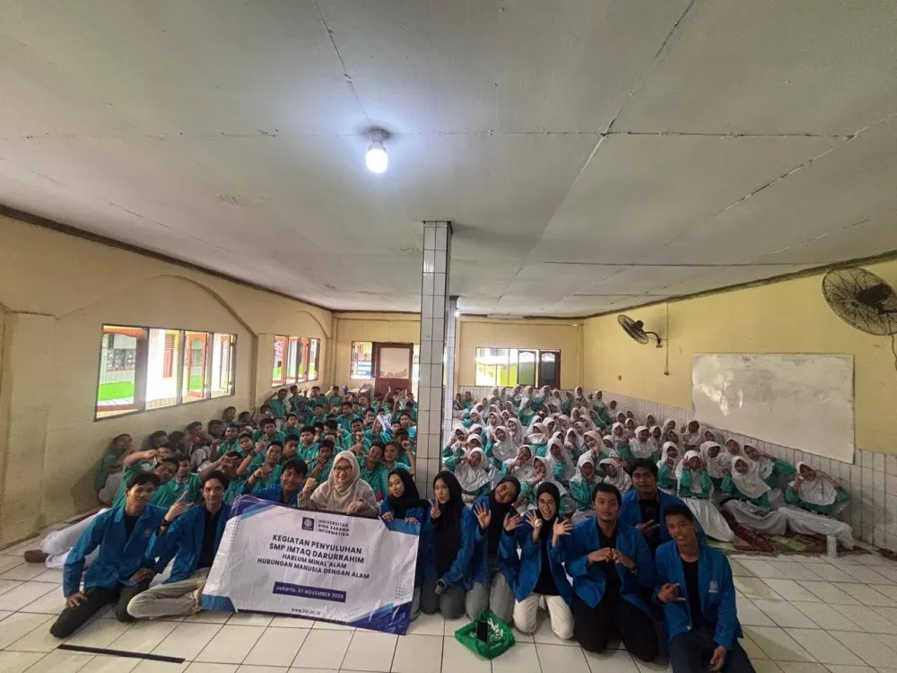
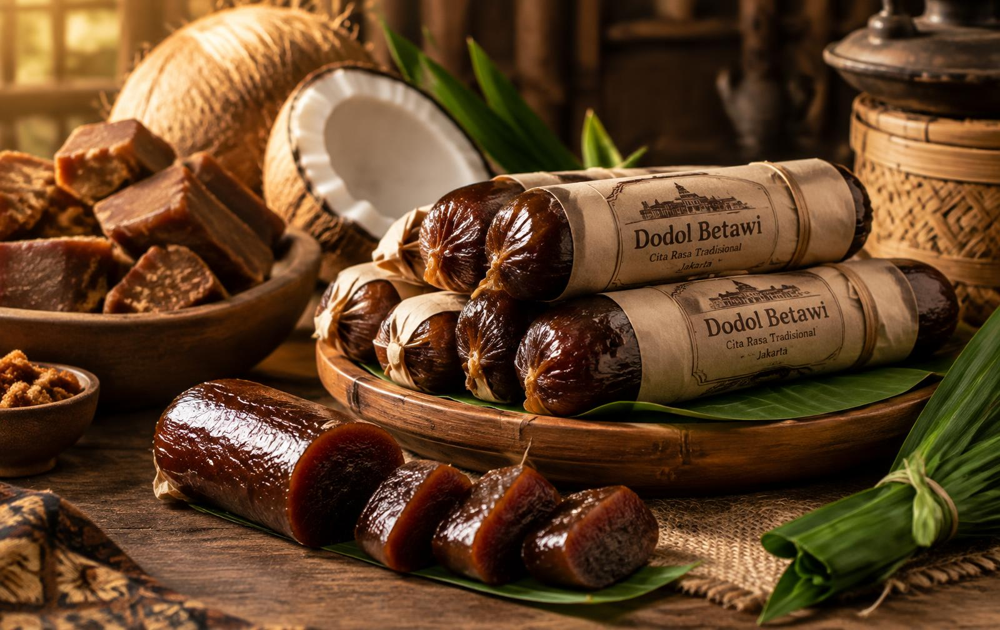
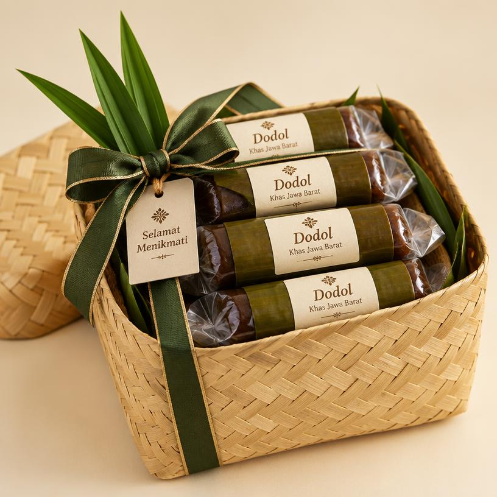
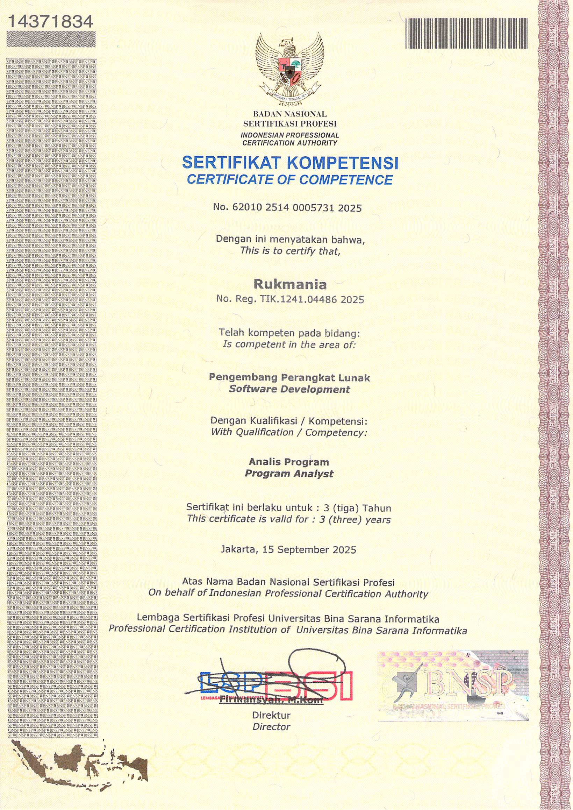
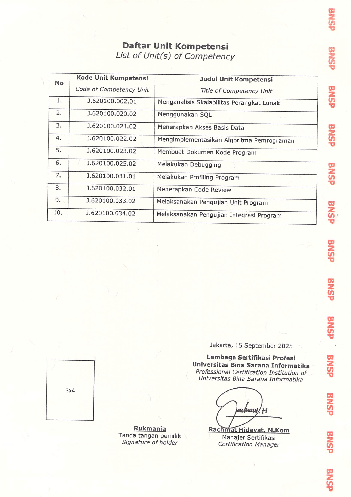
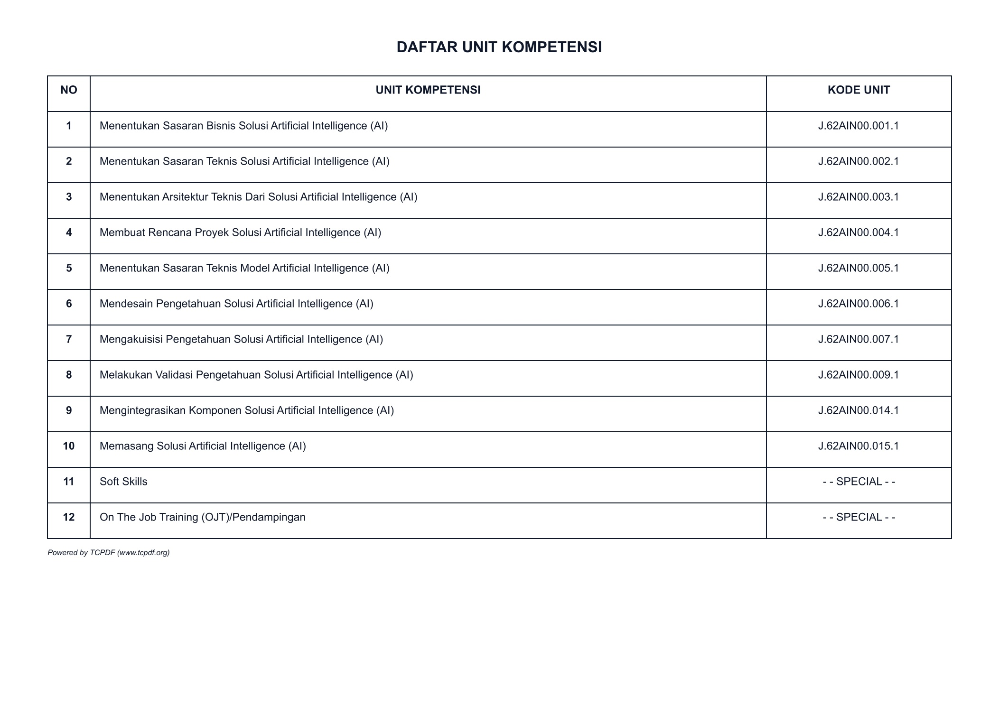

Rukmania (Nia)
Lulusan Sarjana (S1) Sistem Informasi Universitas Bina Sarana Informatika dengan predikat Cum Laude (IPK 3.79/4.00) dan skor TOEFL 557. Memiliki lisensi profesi Analis Program dari BNSP, sertifikasi pelatihan Kejuruan TIK Kemnaker RI (200 JP), perancang website e-commerce live dodolhajiimang.my.id, serta alumni magang komunikasi korporat di PT Transportasi Gas Indonesia (Transgasindo).
Pendidikan Formal
Riwayat pendidikan dan capaian akademik resmi.
Sarjana Komputer (S1) - Sistem Informasi
Universitas Bina Sarana Informatika (UBSI), Jakarta
Analisis & Perancangan Sistem Informasi, Manajemen Basis Data & SQL, Rekayasa Perangkat Lunak, Pengujian Software, serta Komunikasi Bisnis & Publikasi Digital.
Pengalaman Kerja & Magang
Pengalaman langsung di lingkungan perusahaan nasional.
Corporate Communication & Media Documentation Intern
PT Transportasi Gas Indonesia (Transgasindo / TGI)
Mendukung pembuatan media komunikasi korporat untuk kebutuhan publikasi internal dan eksternal, mengelola dokumentasi audio-visual operasional perusahaan, serta berkoordinasi lintas divisi.
Tugas & Hasil Kerja Nyata:
- Produksi Video Majalah Korporat (Energezine Vol. 4-5): Mengumpulkan liputan, menyusun naskah, mengedit video, dan merilis buletin video resmi perusahaan.
- Pembuatan Motion Graphic & Intro Bumper: Merancang animasi logo pembuka untuk meningkatkan standar visual presentasi dan publikasi korporat.
- Dokumentasi Kegiatan Korporat: Mengarsipkan dan mengelola aset media digital kegiatan operasional infrastruktur gas bumi.
Dokumentasi Kegiatan & Lapangan
Dokumentasi nyata keikutsertaan dalam budaya kerja korporat, aksi sosial & CSR, rapat koordinasi divisi di PT Transportasi Gas Indonesia, serta pengabdian masyarakat kampus. Klik foto untuk melihat ukuran penuh.

Kebersamaan Tim & Budaya Kolaboratif
PT Transportasi Gas Indonesia (Transgasindo)Dokumentasi kekompakan jajaran divisi korporat dalam implementasi nilai AKHLAK (Kolaboratif) di lingkungan kerja kantor PT Transportasi Gas Indonesia.

Penyaluran Bantuan "Transgasindo Peduli"
Program Sosial Transgasindo PeduliPartisipasi langsung dalam kegiatan kepedulian sosial korporat mendistribusikan bantuan logistik dan kebutuhan darurat bagi warga terdampak bencana.

Agenda Donor Darah & Medical Check
Divisi HSSE PT Transportasi Gas IndonesiaDukungan teknis pelaksanaan agenda kesehatan kerja berkala dan aksi sosial donor darah bersama tim medis serta jajaran karyawan di kantor pusat.

Rapat Koordinasi & Notulensi Kegiatan
Ruang Rapat Kantor Pusat TGIKeterlibatan dalam rapat operasional divisi, pengelolaan daftar hadir (attendance list), serta pencatatan notulensi agenda kerja korporat.

Sesi Sharing & Ide Bisnis Digital
Forum Edukasi Internal PerusahaanMengikuti pemaparan analisis tren bisnis, riset kebutuhan pasar, serta diskusi strategi pengembangan produk kreatif dalam forum pembelajaran kantor.

Penyuluhan Lingkungan Hidup
SMP Imtaq Darurrahim, JakartaEdukasi kepedulian lingkungan hidup "Hablum Minal'alam" bersama siswa-siswi sekolah dalam rangka pemenuhan Tridharma Perguruan Tinggi mahasiswa S1 UBSI.
Proyek Aplikasi Web: Dodol Haji Imang
Perancangan, analisis sistem, dan pengembangan platform e-commerce UMKM kuliner khas Betawi yang aktif beroperasi di dodolhajiimang.my.id.
E-Commerce & Sistem Kalkulasi Pesanan Dodol Betawi Haji Imang
Peran: Analis Sistem & Web Developer (Full Development Lifecycle)


Latar Belakang & Solusi Sistem:
UMKM Dodol Betawi Haji Imang (Bekasi) sebelumnya mengalami kendala pesanan manual yang memakan waktu: pelanggan sering bingung menghitung kebutuhan dodol untuk hajatan/seserahan, perhitungan ongkir ke luar kota lambat, dan format pesanan chat sering tidak lengkap. Rukmania menganalisis proses bisnis ini dan membangun sistem web terpadu yang memecahkan masalah tersebut secara otomatis.
Kalkulator Hajatan & Seserahan
Algoritma kalkulasi otomatis yang menghitung estimasi kilogram dodol yang dibutuhkan berdasarkan jumlah undangan pernikahan, sunatan, atau acara adat.
Rakit Hampers Custom (Besek Susun)
Fitur interaktif yang memungkinkan pelanggan memilih varian rasa (Original, Wijen, Ketan Hitam) dan kemasan besek bambu khas tradisi Betawi.
Cek Ongkos Kirim Instan
Modul pencarian tarif pengiriman langsung ke 25+ kota se-Indonesia dengan estimasi berat dan hari tiba tanpa perlu chat admin terlebih dahulu.
WhatsApp Direct Checkout
Formulir pemesanan yang otomatis memformat rincian order, total harga, alamat kirim, dan varian pesanan langsung ke nomor WhatsApp pemilik usaha.
Karya Video Proyek Nyata
Video hasil kerja selama magang yang dapat langsung Anda putar di bawah ini.
Energezine Volume 4-5 – PT Transgasindo
Video majalah internal yang merangkum berita kegiatan kerja, pencapaian operasional, dan pesan manajemen perusahaan.
Bumper Video & Opening Intro Korporat
Animasi logo pembuka resmi dengan efek transisi kinetik untuk presentasi dan media publikasi digital perusahaan.
Sertifikasi & Lisensi Profesi
Bukti kompetensi resmi yang diakui secara nasional. Klik gambar untuk melihat ukuran penuh.

Sertifikat Kompetensi: Analis Program
No: 62010 2514 0005731 2025
Bidang: Pengembang Perangkat Lunak (Software Development). Diterbitkan oleh Badan Nasional Sertifikasi Profesi melalui LSP UBSI.

Daftar Unit Kompetensi BNSP
Mencakup: Analisis Skalabilitas, Penggunaan SQL, Akses Basis Data, Algoritma, Debugging, Code Review, dan Pengujian Program.

Sertifikat Bahasa Inggris (TOEFL)
Lembaga Bahasa UBSI (Agustus 2026)
Listening: 57 • Structure: 53 • Reading: 57. Siap bekerja di lingkungan profesional bilingual.

Sertifikat: Generative AI untuk Bisnis
No: 2.10/S-4213/LP.00.05/X/2026
Pelatihan Berbasis Kompetensi (200 JP) BBPVP Bekasi, Ditjen Binalavotas Kementerian Ketenagakerjaan RI. Hasil: LULUS.

Daftar Unit Kompetensi Solusi AI
Mencakup: Sasaran Bisnis & Teknis AI, Arsitektur Solusi AI, Rencana Proyek AI, Desain & Validasi Pengetahuan AI, Integrasi Komponen AI, Soft Skills, dan On The Job Training (OJT).
Keahlian & Keterampilan
Kombinasi keahlian teknis, pemanfaatan kecerdasan buatan (AI), dan kemampuan komunikasi di dunia kerja.
Penerapan AI & Solusi Digital
- Pengoperasian Tools Generative AI untuk Konten & Efisiensi Bisnis
- Perancangan Arsitektur Teknis Solusi Artificial Intelligence
- Analisis Sasaran Bisnis & Perencanaan Proyek AI
- Validasi Pengetahuan & Integrasi Komponen Solusi AI
- Sertifikasi Resmi 200 JP Kemnaker RI (BBPVP Bekasi)
Analisis Sistem & Software
- Analisis Sistem & Diagram UML (Use Case, Activity, Sequence)
- Manajemen Basis Data & Query SQL (MySQL, Relasional)
- Software Debugging & Pengujian Unit Program
- Dokumentasi Teknis & Alur Proses Bisnis
- Pengembangan Web Responsif (HTML5, CSS3, JavaScript)
Media & Komunikasi Korporat
- Video Editing & Compiling Publikasi Korporat
- Pembuatan Motion Graphic & Intro Logo Bumper
- Desain Layout Buletin & Infografis (Canva / Adobe)
- Sinkronisasi Audio Narasi & Voiceover
- Manajemen Aset Media & Dokumentasi Event Korporat
Kolaborasi Tim & Soft Skills
- Cepat Belajar & Mudah Beradaptasi (Fast Learner)
- Bahasa Inggris Aktif & Pasif (Skor TOEFL 557)
- Koordinasi & Komunikasi Lintas Divisi
- Manajemen Waktu & Penyelesaian Sesuai Deadline
- Disiplin, Teliti, dan Bertanggung Jawab
Mari Terhubung & Jadwalkan Wawancara
Saya sangat terbuka untuk peluang magang melalui MagangHub Kemendikbud/BUMN, posisi Analis Sistem, IT Support, maupun divisi Komunikasi/Media di perusahaan Anda.